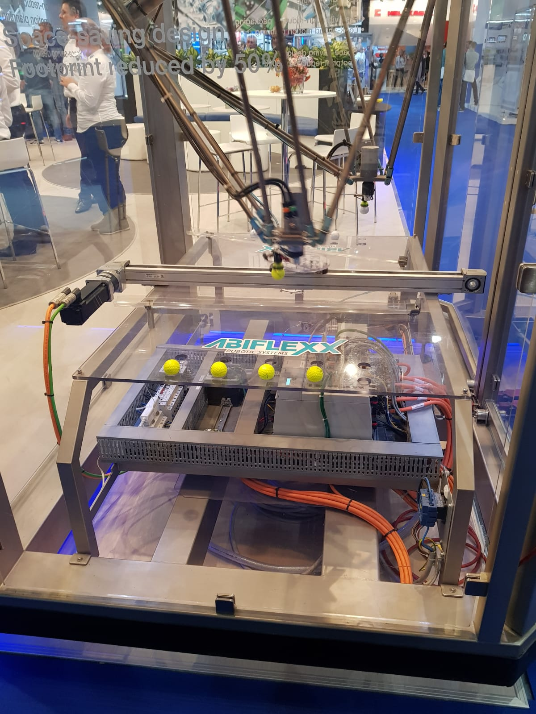

Smart Connection - Excursies Niels
In dit hoofdstuk worden de excursies besproken die ik heb bijgewoond. Ik heb in totaal 4 excursies bijgewoond.
Smart City Eindhoven
Op dinsdagochtend 25 september vertrok de bus met alle minorstudenten en enkele medewerkers van partnerbedrijven naar een Smart City in ontwikkeling naar Eindhoven om 8:30.
De eerste stop was in het Video-Lab waar een presentatie bij de maquette van Strijp-S over het Smart stadsdeel van Eindhoven werd gegeven. In deze presentatie werd toegelicht dat hoe de transformatie van een industriestad naar een Smart City de komende jaren zich ontwikkeld.
De tweede stop was bij Enversed, wat Europa’s grootste Virtual Reality Centre is, waar een unieke ervaring met Virtual Reality werd opgedaan door de studenten. Hier werden in het begin 3 introductie spellen gedaan:
Het tekenen van sterrenbeelden om kennis te maken met de besturing
Met pijl en boog ballonnen stuk schieten om punten te verdienen
Het maken van hamburger samen met een andere ‘speler’
Vervolgens was er een vrije keuze om andere spellen te doen. Zoals het vechten tegen monsters met laserpistolen of parachute springen. Onderstaand zijn wat foto’s die ik gemaakt heb bij Enversed.

Vervolgens liepen wij door Strijp-S, waar een groepsselfie werd gemaakt met een beveiligingscamera, naar de derde bestemming: PlugIn City. Hier leerden wij meer over Circulair Ondernemen. PlugIn City is een gebouw dat volledig gebouwd is met afval materialen waarbij het hoofdcomponent oude zeecontainers zijn (zie onderstaande foto). Zo bleek dat er met deze methode van ondernemen het mogelijk wordt om de kamerverhuur voor studenten te halveren.
De dag werd afgesloten met een lezing door Kees Jansen in het Philips NatLab waarna er een netwerkborrel was georganiseerd.
World of Technology & Science
Op donderdagmiddag 4 oktober heb ik de World of Technology & Science beurs te Utrecht bezocht. Ik ben gedurende de hele dag door de gehele beurs gelopen en heb van alles gezien. Een aantal stands zijn mij specifiek bijgebleven.
Om te beginnen was er ALLROBOTS waar er 2 typen robots gemaakt worden. Dit zijn de robots Amy en Sanbot.
Amy is een zorgbot / gezelschapsbot. Interactie met Amy kan doormiddel van spraak of door een smartphone gedaan worden. De robot dient als een butler voor informatie en wordt gebruikt in zowel de zakelijke als particuliere kringen. Amy werkt met een android systeem.
Sanbot is een robot met vele functies. Zo beschikt deze robot over een beamer, infrarood sensoren en een 3d camera. Deze robot kan worden gebruikt in de zorg, het onderwijs, voor media doeleinden zoals powerpoint, de horeca en ook in de veiligheidssector.
Onderstaand zijn wat foto’s toegevoegd die ik gedurende de dag van alle leuke en interessante stands had gemaakt.

BIT & QING-workshop | Technova college
Op 17 oktober ben ik op excursie naar BIT te ede en het Technova college voor een workshop van QING geweest.
BIT beschikt over 3 datacenters en specialiseert zich in colocatie, internetverbindingen, managed hosting en outsourcing. BIT is als het ware de ruggengraat van organisaties. Tijdens de presentatie in Ede werd duidelijk wat het belang is van het veilig opslaan en verwerken van data en waarom zo veel IT bedrijven zich vestigen in Nederland. Nederland heeft een van de grootste internetknooppunten ter wereld. In Nederland kruisen namelijk 3 van de 5 Internet Exchange lijnen.
Na de presentatie kregen wij een rondleiding door het datacentrum heen. Al snel bleek hoeveel geld er in beveiliging gaat. Zo stond er voor bijna € 30.000 aan brandblus equipment en waren er enorm dikke kluisdeuren, waarvan eentje enkel met een irisscanner opengemaakt kon worden. In deze ruimtes stonden alleen maar ‘kasten’, zoals op onderstaande foto te zien is, waarin data verwerkt werd.
Vervolgens gingen we naar het Technova college waar een presentatie over o.a. Digital twins en simulaties werd gegeven. Na deze presentatie werden we voorgesteld aan studenten van het Technova college en moesten wij onze opdrachten bespreken en ideeën uitwisselen. Ik was benieuwd naar wat de studenten aan het Technova college allemaal deden, en toen kreeg ik een rondleiding. Ze lieten mij zien aan wat voor robots ze werkten, wat ik simpelweg fascinerend vond (zie onderstaande foto’s). Zo hadden de studenten een tank gemaakt die met een enorme kracht nerf gun pijltjes af kon schieten. Een R2D2 robot die autonoom door een kamer kan rijden zonder tegen objecten of wandelende personen aan te botsen. En tot slot een robot draak van Game Of Thrones.

ICT & Logistiek | Jaarbeurs Utrecht
Op 8 November ben ik naar de ICT & Logistiek jaarbeurs in Utrecht geweest.
Dit is een jaarlijks evenement waar bedrijven ICT oplossingen laten zien aan het publiek om de logistieke processen efficiënt in te richten en uit te voeren. De thema’s Supply Chain, ICT en Connected Logistics stonden hier dan ook centraal. Ik zal in deze paragraaf de 3 stands benoemen die mij het meeste zijn bijgebleven.
De eerste stand die ik bezocht was van SATO Online Service (SOS). Dit bedrijf presenteerde op de stand een Smart printer welke hieronder op de foto’s te zien zijn.
Dit is een IoT printer waarbij geen computer meer aan te pas komt om te printen.
Hetgeen wat mij verbaasde aan deze printer was het feit dat het draaide op de Lua programmeertaal. Dit verbaasde mij omdat deze programmeertaal meestal wordt gebruikt om videogames te bouwen, gezien het een dynamisch getypeerde imperatieve scripttaal is.
Daarnaast heb ik een bezoekje gebracht aan de Bumblebee GPS IoT trackers stand.
Dit bedrijf specialiseert zich in het volgen van bedrijfs eigendommen (zoals containers) met behulp van draadloze technieken. Het Sigfox netwerk staat hier centraal. Ik vond het fascinerend dat deze IoT trackers (zie onderstaande foto’s, het zwarte doosje) tot wel 4 jaar autonoom kunnen draaien op een enkele accu die niet opgeladen hoeft te worden. Daarnaast is de tracker bestand tegen temperaturen van -20°C tot aan 80°C.

De derde stand die ik graag wil benoemen is de stand van Rittal. Dit bedrijf specialiseert zich in het maken van kasten voor serverruimtes. Op onderstaande foto is het nieuwste model te zien: de RiMatrix. Deze kast is uniek is omdat het beschikt over haar eigen blusinstallatie. Hierdoor hoeft bij brand niet meer de gehele (of een gedeelte van) de serverruimte geblust te worden, maar kan alles door blijven draaien behalve de specifieke kast. Hierdoor zijn grote blusinstallaties met tientallen (of honderden, zoals bij de excursie naar BIT te Ede te zien was) blus flessen niet meer nodig.